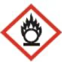

특별한국어능력시험문제( )
Q. 1. 유기용제에 대한 설명으로 틀린 것은?
① 유기용제는 비수용성 물질을 용해시키는 화합물이다.
② 대부분의 유기용제는 실온에서 휘발되기 어렵다.
③ 유기용제는 작업장에서 다양한 용도로 활용한다.
④ 페인트 제거제, 부식제에 포함된 유기용제는 소량 노출되어도 위험하다.
Right Ans:- ② 대부분의 유기용제는 실온에서 휘발되기 어렵다.
Q. 2. 메탄올에 대한 설명으로 틀린 것은?
① 메탄올은 플라스틱과 필름 제조, 접착제와 잉크의 첨가제 등 다양한 용도로 사용된다.
② 메탄올에 중독되면 망막 세포가 손상되어 시력을 잃을 수 있다.
③ 메탄올이 불순물로 포함된 술은 마셔도 해가 없다.
④ 메탄올에 중독된 경우 독성을 줄이기 위하여 에탄올을 투여할 수 있다.
Right Ans:- ③ 메탄올이 불순물로 포함된 술은 마셔도 해가 없다.
Q. 3. 화학물질의 위험성에 대한 설명으로 틀린 것은?
① 화학물질의 위험성은 독성의 강도에 비례한다.
② 화학물질의 위험성은 노출된 농도에 비례한다.
③ 화학물질의 위험성은 노출된 시간에 비례한다.
④ 화학물질의 위험성은 노출된 시간과 무관하다.
Right Ans:- ④ 화학물질의 위험성은 노출된 시간과 무관하다.
Q. 4. 위험성에 대한 설명으로 틀린 것은?
① 위험물에는 위험성이 있는 화학 물질이 포함된다.
② 위험성이 있는 화학물질에서 파생된 제품이나 도구 역시 위험물에 포함된다.
③ 위험물은 인간의 생명, 신체, 재산 및 환경에 피해를 줄 수 있는 물질이다.
④ 위험물은 특별한 관리나 규제가 필요 없다.
Right Ans:- ④ 위험물은 특별한 관리나 규제가 필요 없다.
Q. 5. 위험물의 일반적인 특성에 대한 설명으로 틀린 것은?
① 대부분 화학적, 물리적으로 불안정한 물질이다.
② 물 또는 산소와 반응성이 좋다.
③ 반응에 따른 발열량이 매우 낮다.
④ 반응 속도가 매우 빠르다.
Right Ans:- ③ 반응에 따른 발열량이 매우 낮다.
Q. 6. 위험물의 위험성에 대한 설명으로 틀린 것은?
① 대부분의 위험물은 가연성 물질이므로 연소성이 있다.
② 방사성을 보이는 위험물은 세심하게 주의하지 않아도 된다.
③ 일부 위험물은 폭발성을 보이기도 한다.
④ 일부 위험물은 화학적으로 독성을 보이기도 한다.
Right Ans:- ② 방사성을 보이는 위험물은 세심하게 주의하지 않아도 된다.
Q. 7. 인화성 물질을 취급할 때 주의할 점으로 틀린 것은?
① 담배를 피우면서 다루어도 무방하다.
② 불꽃과의 접근을 피한다.
③ 고온의 물체와 접근을 피한다.
④ 함부로 증기를 발생시키지 않는다.
Right Ans:- ① 담배를 피우면서 다루어도 무방하다.
Q. 8. 가연성 가스 및 이의 취급에 대한 설명으로 틀린 것은?
① 가연성 가스는 폭발을 일으키면서 급격히 팽창하므로 위험하다.
② 가연성 가스의 폭발은 충격적인 열과 압력을 발생시킨다.
③ 가연성 가스는 산화에 의해 폭발할 수 있으므로 주의를 요한다.
④ 가연성 가스는 비활성 가스 용기에 저장하여 사용해도 무방하다.
Right Ans:- ④ 가연성 가스는 비활성 가스 용기에 저장하여 사용해도 무방하다.
Q. 9. 위험물 안전관리자에 대한 설명으로 틀린 것은?
① 위험물을 취급하는 업체에서는 위험물 안전관리자를 선임해야 한다.
② 위험물 안전관리자는 화재가 발생할 경우 응급 조치를 취해야 한다.
③ 위험물 안전관리자는 화재 발생 후 소방서에 연락하지 않아도 된다.
④ 위험물 안전관리자는 위험물 취급에 대한 일지를 작성해야 한다.
Right Ans:- ③ 위험물 안전관리자는 화재 발생 후 소방서에 연락하지 않아도 된다.
Q. 10. 위험물의 취급에 대한 설명으로 틀린 것은?
① 위험물의 쓰레기와 찌꺼기는 안전한 장소에 폐기하거나 적당한 방법으로 처리해야 한다.
② 위험물을 저장할 때 이물질을 섞어도 무방하다.
③ 위험물을 용기에 저장할 때에는 파손, 부식, 균열이 없도록 주의한다.
④ 위험물이 남아 있는 설비를 수리할 때에는 안전한 장소에서 위험물을 완전히 제거 한 후 실시한다.
Right Ans:- ② 위험물을 저장할 때 이물질을 섞어도 무방하다.
Q. 11. 위험물의 저장에 대한 설명으로 틀린 것은?
① 위험물의 저장 용기를 겹쳐 쌓아 규정 높이를 초과해도 된다.
② 위험물과 위험물이 아닌 물질과의 거리는 1 m 이상 유지한다.
③ 위험물과 다른 종류의 위험물 사이의 거리는 1 m 이상 유지한다.
④ 위험물 저장소는 다른 건축물과 안전거리를 유지한다.
Right Ans:- ① 위험물의 저장 용기를 겹쳐 쌓아 규정 높이를 초과해도 된다.
Q. 12. 유해 화학 물질의 노출 시 대처 방법에 대한 설명으로 틀린 것은?
① 공장에서 화학물질에 노출될 경우를 대비하여 적절한 치료와 처치 방법을 미리 파악 해야 한다.
② 농약은 독성이 강한 화학물질이므로, 작업 중 노출될 경우 적절한 치료와 처리 방법을 숙지해야 한다.
③ 공장에서 작업할 때 화학물질의 노출을 방지하기 위한 방호법을 잘 지키지 않아도 된다.
④ 유해 화학 물질에 노출될 경우 응급 처치 후에 병원을 방문해야 한다.
Right Ans:- ③ 공장에서 작업할 때 화학물질의 노출을 방지하기 위한 방호법을 잘 지키지 않아도 된다.
Q. 13. 위험물의 종류 및 분류에 대한 설명으로 틀린 것은?
① 대한민국에서는 산업안전보건 기준에 따라 위험물이 분류되어 있다.
② 인화성 물질에는 인화성 고체, 인화성 액체와 인화성 기체가 포함된다.
③ 인화성 액체는 초기 비점이 섭씨 35도 이하인 물질이다.
④ 대한민국에서는 위험물질의 위험 등급에 따라 위험물을 분류하지는 않는다.
Right Ans:- ④ 대한민국에서는 위험물질의 위험 등급에 따라 위험물을 분류하지는 않는다.
Q. 14. 가스 상태의 유해물질을 고려할 때 이러한 유해물질의 유해요인에 해당되지 않는 것은?
① 인체에 유해한 화학물질의 가스와 증기가 포함된다.
② 인체에 유해한 화학물질의 분진이 포함된다.
③ 인체에 유해한 화학물질의 소음이 포함된다.
④ 인체에 유해한 화학물질의 명칭이 포함된다.
Right Ans:- ④ 인체에 유해한 화학물질의 명칭이 포함된다.
Q. 15. 유해화학물질 중 자기반응성 물질(self-reactive substance) 취급에 대한 내용이 아닌 것은?
① 저장 용기의 파손 및 균열에 주의하고 누출을 방지한다.
② 직사광선을 피하고 적정한 온도와 습도를 유지한다.
③ 통풍이 잘 되지 않는 장소에 저장한다.
④ 눈이나 피부에 접촉 시 중성세제나 다량의 물로 씻는다.
Right Ans:- ③ 통풍이 잘 되지 않는 장소에 저장한다.
Q. 16. 위험물 중 특수가연물의 저장 기준에는“쌓는 부분의 바닥 면적이 50m2 이하가 되도록 할 것”이 있다. 바닥에 특수가연물을 쌓을 때 가로를 5m로 한다면, 세로는 얼마인가?
① 5m
② 12m
③ 15m
④ 5km
Right Ans:- ① 5m
Q. 17. 화학물질의 위험성이 많고 적음은 <위험성=독성강도×노출농도×노출시간> 으로 표시할수있다. 독성의강도가1일때위험성이가장큰경우는?
① 노출 농도가 1, 노출 시간이 1인 경우
② 노출 농도가 0.5, 노출 시간이 2인 경우
③ 노출 농도가 0.25, 노출 시간이 4인 경우
④ 노출 농도가 0.125, 노출 시간이 9인 경우
Right Ans:- ④ 노출 농도가 0.125, 노출 시간이 9인 경우
Q. 18. 위험물과 비위험물의 설명에 대해 틀린 것은?
① 위험물은 인간의 생명, 신체, 재산과 환경에 피해를 줄 수 있는 화학물질로 관리나 규제가 필요한 것이다.
② 위험물안전관리법에 의하면 위험물은 인화성과 발화성 등의 성질을 가지면서 대통령령이 정하는 물질이다.
③ 비위험물은 위험물안전관리법에 적용받지 않는 유해화학 물질이다.
④ 비위험물을 다룰 때에는 특별한 주의가 필요하지 않다.
Right Ans:- ④ 비위험물을 다룰 때에는 특별한 주의가 필요하지 않다.
Q. 19. 위험물안전관리법에 의하면 제 4류 위험물은 인화성 액체에 해당된다. 인화성 액체에 포함되지 않는 위험물은?
① 제 1 석유류
② 알코올류
③ 동식물 유류
④ 철분
Right Ans:- ④ 철분
Q. 20. 다음 그림은 ‘호흡기과민성, 발암성, 생식세포 변이원성, 생식독성, 특정표적장기독성’을 의미한다. 이러한 그림이 있는 화학물질을 취급할 때, 주의할 점에 해당되지 않는 것은?
① 호흡기에 유해할 수 있으므로, 냄새를 맡지 않는다.
② 발암성이 있으므로, 피부에 묻지 않도록 주의한다.
③ 장기에 독성을 보일 수 있으므로, 먹지 않는다.
④ 호흡기에만 유해한 물질이므로, 피부에 노출되어도 씻어낼 필요는 없다.
Right Ans:- ④ 호흡기에만 유해한 물질이므로, 피부에 노출되어도 씻어낼 필요는 없다.
Q. 21. 작업장에 있는 어떤 화학물질에 다음 두 개의 그림문자가 붙어 있다. 이 화학물질은 무엇인가?

① 산화성 액체
② 산화성 고체
③ 산화성 가스
④ 독성 가스
Right Ans:- ③ 산화성 가스
Q. 22. 우라늄의 노출 기준(TWA)이 0.2 mg/m3 인 것과 관련하여 맞는 것은?
① 인체가 우라늄에 노출되어도 별 탈이 없음을 의미한다.
② 인체가 우라늄에 노출되면 무조건 사망하게 됨을 의미한다.
③ 어떤 곳에 0.2 mg/m
3의 우라늄이 존재하면 사망함을 의미한다.
④ 1일 작업시간 동안 0.2 mg/m
3 미만의 우라늄에 노출되면 거의 모든 근로자에게 건강상 나쁜 영향이 없음을 의미한다.
Right Ans:- ④ 1일 작업시간 동안 0.2 mg/m3 미만의 우라늄에 노출되면 거의 모든 근로자에게 건강상 나쁜 영향이 없음을 의미한다.
Q. 23. 페닐 포스핀의 노출 기준은 0.025 mg/m3로써 이것은 최고노출 기준으로 C값이 라고도 표기한다. 이에 대한 설명으로 옳은 것은?
① 인체가 페닐 포스핀에 노출되어도 별 탈이 없음을 의미한다.
② 인체가 페닐 포스핀에 노출되면 무조건 사망하게 됨을 의미한다.
③ 어떤 곳에 0.025 mg/m
3의 페닐 포스핀이 존재하면 사망함을 의미한다.
④ 1일 작업시간 동안 페닐 포스핀에 잠시라도 노출되어서는 안 되는 기준이 0.025 mg/m
3 이라는 의미이다.
Right Ans:- ④ 1일 작업시간 동안 페닐 포스핀에 잠시라도 노출되어서는 안 되는 기준이 0.025 mg/m3 이라는 의미이다.
Q. 24. 유해 요인은 물리적, 화학적, 생물학적, 인간공학적 요인으로 분류가 가능하다. 화학적 유해 요인에 해당되지 않는 것은?
① 소음 및 진동
② 가스와 증기 등 기체
③ 액체
④ 고체
Right Ans:- ① 소음 및 진동
Q. 25. 유리 세척 용액에는 암모니아가 함유되어 있다. 실험실에서 이 세척 용액병을 사용 하던 중 실수로 바닥에 떨어뜨려 깨졌다. 이러한 화학물질의 유출에 대한 대응으로 잘못된 것은?
① NaOH가 포함된 표백제로 닦아낸다.
② 누출된 암모니아 기체는 유독하므로, 마스크를 착용한다.
③ 주변의 다른 사람들에게 위험을 알려서 주의하도록 한다.
④ 깨진 유리병은 위험하므로, 맨손으로 줍지 않는다.
Right Ans:- ① NaOH가 포함된 표백제로 닦아낸다.
Q. 26. 산에 대한 설명으로 틀린 것은?
① 산이란 물에 녹았을 때 수소 양이온(H+)을 방출하는 화합물이다.
② 산은 수소와 하나 이상의 비금속으로 이루어져 있다.
③ 산은 신맛이 나고 금속을 녹일 수 있다.
④ 수산화나트륨 수용액은 산의 대표적인 예이다.
Right Ans:- ④ 수산화나트륨 수용액은 산의 대표적인 예이다.
Q. 27. 산-염기의 반응에 대한 설명으로 틀린 것은?
① 산-염기의 반응은 산과 염기가 반응하여 두 물질이 중화되는 반응이다.
② 산-염기 반응은 중화반응이라고도 부른다.
③ 산-염기 반응의 예로 제산제와 위산의 반응을 들 수 있다.
④ 산-염기 반응은 물과 염산을 형성한다.
Right Ans:- ④ 산-염기 반응은 물과 염산을 형성한다.
Q. 28. 염기에 대한 설명으로 틀린 것은?
① 염기란 수용액에서 OH- 이온을 생성하는 물질이다.
② 염기는 산과 반응하여 중화반응을 일으킨다.
③ 중화반응을 거쳐 물과 염기가 형성된다.
④ 염기는 쓴 맛이 나는 물질이 많다.
Right Ans:- ③ 중화반응을 거쳐 물과 염기가 형성된다.
Q. 29. 연소반응에 대한 설명으로 틀린 것은?
① 연소반응은 어떤 물질이 산소와 결합하여 산소를 포함하는 화합물을 만드는 화학 반응이다.
② 연소반응에는 에너지가 출입하지 않는다.
③ 연소반응에는 열이 방출된다.
④ 연소반응에서 방출되는 열을 연소열이라 부른다.
Right Ans:- ② 연소반응에는 에너지가 출입하지 않는다.
Q. 30. 생성열에 대한 설명으로 틀린 것은?
① 생성열이란 어떤 화합물 1 mole이 성분 원소들로부터 만들어질 때 발생하거나 흡수 되는 열량이다.
② 표준 생성열이란 표준 상태에서의 반응물과 생성물을 가정할 때의 생성열이다.
③ 생성열은 반응열의 일종이다.
④ 생성열은 반응열과 중요한 관련성이 없다.
Right Ans:-
Q. 31. 연소 반응에 대한 설명으로 틀린 것은?
① 연소열이란 어떤 화합물 1 mole이 완전 연소할 때 얻어지는 열의 변화이다.
② 유기화합물은 연소에 의하여 대부분 탄산가스와 물이 얻어진다.
③ 연소열은 영양학에서도 중요한 의미를 갖는다.
④ 연소 반응은 항상 흡열 반응이다.
Right Ans:- ④ 연소 반응은 항상 흡열 반응이다.
Q. 32. 화학 반응의 반응열에 대한 설명으로 틀린 것은?
H2(g) + Cl2(g) --> 2HCl(g), △H = -44 kcal
① 1 mol의 염화수소가 생성될 때, 반응열은 - 22 kcal이다.
② 이 반응은 발열 반응이다.
③ 이 반응의 생성물은 염화수소 수용액이다.
④ 이 반응의 반응물은 수소와 염소 기체이다.
Right Ans:- ③ 이 반응의 생성물은 염화수소 수용액이다.
Q. 33. 화학 반응에서 1 mole의 요오드화 수소에 대한 반응열은?
H2(g) + I2(g) --> 2HI(g), △H = 11.9 kcal
① 11.9 kcal
② 5.95 kcal
③ 23.8 kcal
④ -5.95 kcal
Right Ans:- ② 5.95 kcal
Q. 34. 다음은 섭씨 18도에서 화합물의 1 mole 당 반응열(kcal)이다. 이 중 발열반응을 일으키는 화합물은 몇 개인가?
CH4(g): -212.8, C2H6(g): -373.0, C2H4(g): -337.0, C2H2(g): -310.5
① 1
② 2
③ 3
④ 4
Right Ans:- ④ 4
Q. 35. 반응열에 대한 설명으로 틀린 것은?
① 일정한 온도와 압력에서 화학 반응을 진행하기 위하여 열을 공급해야 할 때, 흡열 반응이라 한다.
② 일정한 온도와 압력에서 화학 반응을 진행하기 위하여 열을 제거해야 할 때, 발열 반응이라 한다.
③ 생성물의 엔탈피의 합이 반응물의 엔탈피의 합 보다 더 크면 흡열반응이라 한다.
④ 발열반응은 반응물의 엔탈피의 합이 생성물의 엔탈피의 합 보다 작은 경우이다.
Right Ans:- ④ 발열반응은 반응물의 엔탈피의 합이 생성물의 엔탈피의 합 보다 작은 경우이다.
Q. 36. 표준 연소반응에 대한 설명으로 맞는 것은?
① 연소반응이 1 기압에서 일어날 때의 반응열로 정의된다.
② 연소반응이 1 Pa에서 일어날 때의 반응열로 정의된다.
③ 연소반응이 1 mmHg에서 일어날 때의 반응열로 정의된다.
④ 연소반응이 76 mmHg에서 일어날 때의 반응열로 정의된다.
Right Ans:- ① 연소반응이 1 기압에서 일어날 때의 반응열로 정의된다.
Q. 37. 반응열에 대한 설명으로 틀린 것은?
① 생성열과 연소열은 반응열에 포함되지 않는다.
② 생성열이란 생성반응에 수반되는 반응열이다.
③ 표준 생성반응이란 1 기압에서의 생성반응을 의미하며, 이때의 반응열이 표준생성 반응열이다.
④ 표준 생성반응에서 온도는 제약 조건이 아니다.
Right Ans:- ① 생성열과 연소열은 반응열에 포함되지 않는다.
Q. 38. 어떤 반응이 다음과 같이 진행되며, 반응물(A)와 생성물(B)의 엔탈피가 아래와 같이 주어졌을 때, 반응열은 얼마인가?
A-->B,HA =100kcal,HB =50kcal
① -50 kcal
② -50 cal
③ 50 kcal
④ 50 cal
Right Ans:- ① -50 kcal
Q. 39. pH에 대한 설명으로 틀린 것은?
① 어떤 물질의 pH가 7 보다 높으면 염기성이다.
② 어떤 물질의 pH가 7 보다 낮으면 염기성이다.
③ pH는 -log[H+]로 정의된다.
④ pH가 7이면 중성이다.
Right Ans:- ② 어떤 물질의 pH가 7 보다 낮으면 염기성이다.
Q. 40. 불산 수용액의 pH가 2 일때 수소 이온의 몰농도는 얼마인가?
① 0.01 M
② 0.001 M
③ 0.0001 M
④ 0.00001 M
Right Ans:- ① 0.01 M
Q. 41 . 천연 가스에 대한 설명으로 틀린 것은?
① 메탄(CH4)이 주성분이다.
② 연료로 활용되며 화학공업의 주요한 원료로도 사용된다.
③ 액화천연가스(LNG)는 냉각과 팽창을 통해 천연 가스를 액화시킨 것이다.
④ 건성가스와 습성가스로 나뉘어진다.
Right Ans:- ③ 액화천연가스(LNG)는 냉각과 팽창을 통해 천연 가스를 액화시킨 것이다.
Q. 42 . 천연 가스에 대한 설명으로 틀린 것은?
① 대한민국에서는 천연 가스가 울산에서 소량 산출된다.
② 천연 가스의 성분은 석유와 거의 비슷하다.
③ 천연 가스를 연료로 활용한 자동차가 생산되고 있다.
④ 천연 가스는 합성 가스의 주요한 원료이다.
Right Ans:- ② 천연 가스의 성분은 석유와 거의 비슷하다.
Q. 43 . 합성 가스에 대한 설명으로 틀린 것은?
① 합성 가스란 일산화탄소(CO)와 수소(H2)의 혼합물이다.
② 합성 가스는 메탄의 수증기 개질 반응으로 제조될 수 있다.
③ 합성 가스는 석탄으로도 제조될 수 있다.
④ 합성 가스는 주로 연료로 활용된다.
Right Ans:- ④ 합성 가스는 주로 연료로 활용된다.
Q. 44 . 석유정제에 대한 설명으로 틀린 것은?
① 석유정제란 원유를 물리화학적으로 처리하여 각종 석유제품을 생산하는 것이다.
② 석유정제를 위하여 증류에 의해 원유를 구성하는 성분들을 끓는점의 차이에 따라 분류한다.
③ 보통 원유를 전처리 하지 않고 바로 증류한다.
④ 석유정제를 통해 휘발유를 얻을 수 있다.
Right Ans:- ③ 보통 원유를 전처리 하지 않고 바로 증류한다.
Q. 45 . 석유의 정제에 대한 설명으로 틀린 것은?
① 석유의 정제는 황성분, 고무 상태의 물질 등 불순물을 제거하는 과정이다.
② 석유를 정제할 때 품질이 나쁜 탄화수소는 제거하지 않아도 된다.
③ 석유정제 과정에서 세척을 위해 활용하는 황산은 공해를 유발한다.
④ 석유정제는 증류를 거쳐 얻어진 생성물에 적용한다.
Right Ans:- ② 석유를 정제할 때 품질이 나쁜 탄화수소는 제거하지 않아도 된다.
Q. 46 . 천연가스에 대한 설명으로 틀린 것은?
① 천연가스는 메탄이 주성분이며, 천연으로 산출되는 가스이다.
② 천연가스는 건성가스, 습성가스, 액화석유가스로 분류된다.
③ 건성가스는 압력을 가해도 상온에서 액화되기 어렵다.
④ 습성가스는 압력을 가하여 상온에서 액화된다.
Right Ans:- ② 천연가스는 건성가스, 습성가스, 액화석유가스로 분류된다.
Q. 47 . 원유의 증류에 대한 설명으로 틀린 것은?
① 예전에는 연속식으로 증류하였으나, 현재는 회분식(batch)으로 증류한다.
② 석유를 증류할 때에는 증류탑을 활용할 수 있다.
③ 원유에는 염산염이나 황산염이 포함되어 있으므로, 증류 전에 탈염을 거친다.
④ 증류탑에는 여러 개의 쟁반(tray)를 설치하여 효과를 높인다.
Right Ans:- ① 예전에는 연속식으로 증류하였으나, 현재는 회분식(batch)으로 증류한다.
Q. 48 . 석유에 대한 설명으로 틀린 것은?
① 석탄은 석유보다 공업적으로 중요한 자원이다.
② 석유를 증류하여 가솔린 등 연료를 얻을 수 있다.
③ 현재 대한민국에서는 석유가 생산되지 않는다.
④ 석유는 증류 후에 불순물을 제거하는 석유정제 과정을 거친다.
Right Ans:- ① 석탄은 석유보다 공업적으로 중요한 자원이다.
Q. 49 . 천연가스에 대한 설명으로 맞는 것은?
① 천연가스의 주성분은 부탄이다.
② 천연가스는 증류를 거쳐서 활용한다.
③ 천연가스는 메탄을 주성분으로 하는 액체 상태의 물질이다.
④ 천연가스는 건성가스와 습성가스로 분류한다.
Right Ans:- ④ 천연가스는 건성가스와 습성가스로 분류한다.
Q. 50 . 석유정제에 대한 설명으로 맞는 것은?
① 석유정제란 증류를 거친 유분으로부터 불순물을 제거하는 과정이다.
② 석유정제를 거쳐 합성가스를 얻을 수 있다.
③ 석유정제는 천연가스의 순도를 높이는 과정이다.
④ 석유정제는 천연가스에 가압하여 액화하는 과정이다.
Right Ans:- ① 석유정제란 증류를 거친 유분으로부터 불순물을 제거하는 과정이다.
Q. 51 . 위험물안전관리법상 위험물의 정의로 맞는 것은?
① 도지사가 정하는 발화성 또는 인화성 등의 물질
② 소방서장이 정하는 폭발성 등의 물질
③ 대통령령이 정하는 인화성 또는 발화성 등의 물질
④ 행정자치부장관관이 정하는 폭발성 등의 물질
Right Ans:- ③ 대통령령이 정하는 인화성 또는 발화성 등의 물질
Q. 52 . 위험물의 지정수량이란?
① 군수, 시장이 정하는 수량을 말한다.
② 도지사가 정하는 수량을 말한다.
③ 대통령령이 정하는 수량을 말한다.
④ 소방본부장 또는 소방서장이 정하는 수량을 말한다.
Right Ans:- ③ 대통령령이 정하는 수량을 말한다.
Q. 53 . 위험물제조소 옥외에 있는 액체위험물을 취급하는 100m3 및 50m3 의 용량 2개의 탱크 주위에 설치하여야 할 방유제의 최소용량(m3 )은?
① 75
② 50
③ 55
④ 60
Right Ans:- ③ 55
Q. 54 . 품명을 달리하는 2개 이상의 위험물을 동일한 장소에 저장할 경우 지정 수량의 환산은 어느 것인가?
① 저장하는 위험물 중 그 양에 가장 많은 것을 지정수량으로 한다.
② 저장하는 위험물 중 가장 위험도가 높은 것이 지정수량 이상일 때이다.
③ 2품명의 위험물을 합하여 그 양이 지정수량 이상일 때이다.
④ 각 품명별로 저장하는 수량을 그 품명별 지정수량을 나누어 얻은 수의 합계가 1 이상일 때이다.
Right Ans:- ④ 각 품명별로 저장하는 수량을 그 품명별 지정수량을 나누어 얻은 수의 합계가 1 이상일 때이다.
Q. 55 . 제1류 위험물을 취급할 때 주의사항으로서 틀린 것은?
① 환기가 잘 되는 찬 곳에 저장한다.
② 가열, 충격, 마찰을 피한다.
③ 가연물과의 접촉을 피한다.
④ 용기를 옮길 때는 개방용기를 사용한다.
Right Ans:- ④ 용기를 옮길 때는 개방용기를 사용한다.
Q. 56 . 제1류 위험물 무기과산화물류에 대한 설명 중 잘못된 것은?
① 불연성 물질이다.
② 가열 또는 산화되기 쉬운 물질과 혼합되면 분해하여 산소를 방출한다.
③ 물과 반응하면 발열하고 수소를 발생하는 것도 있다.
④ 가열, 충격에 의해 폭발하는 것도 있다.
Right Ans:- ③ 물과 반응하면 발열하고 수소를 발생하는 것도 있다.
Q. 57 . 2몰의 에틸알코올이 완전 연소할 때 생기는 CO2의 몰수는 ?
① 1몰
② 2몰
③ 3몰
④ 4몰
Right Ans:- ④ 4몰
Q. 58 . 제2류 위험물을 저장할 때에 특히 주의해야 할 사항은?
① 환원제와의 접촉을 피한다.
② 가연물과 접촉을 피한다.
③ 금속분은 물 속에 저장한다.
④ 산화제와의 접촉·혼합을 피한다.
Right Ans:- ④ 산화제와의 접촉·혼합을 피한다.
Q. 59 . 제3류 위험물의 성질로서 적합한 것은?
① 산화력이 강하다.
② 물과 반응하여 화학적으로 활성화 된다.
③ 전부 보호액 중에 보관해야 된다.
④ 전부 단체 금속이다.
Right Ans:- ② 물과 반응하여 화학적으로 활성화 된다.
Q. 60 . 제3류 위험물의 화재예방상 공통된 성질로서 옳은 것은?
① 착화온도가 낮은 액체이다.
② 자연발화성 물질은 불티, 불꽃 또는 고온체의 접근, 과열 또는 공기와 접촉을 피한다.
③ 전부 가연성이지만 유기물과 접촉하면 산소를 발생한다.
④ 물과 접촉하면 산소를 발생하고 다른 물질을 산화시킨다.
Right Ans:- ② 자연발화성 물질은 불티, 불꽃 또는 고온체의 접근, 과열 또는 공기와 접촉을 피한다.
Q. 61 . 다음은 제4류 위험물의 공통적인 특징이다. 틀린 것은?
① 인화되기가 매우 쉽다.
② 증기는 공기보다 가볍다.
③ 착화온도가 낮은 것은 위험하다.
④ 증기와 공기가 약간 혼합되어 있어도 연소한다.
Right Ans:- ② 증기는 공기보다 가볍다.
Q. 62 . 공기의 평균 분자량을 29라고 했을 때 에탄올 증기의 표준상태에서 증기비중은?
① 1
② 1.2
③ 1.59
④ 2.3
Right Ans:- ③ 1.59
Q. 63 . T.N.T(Tri nitro toluene)의 분자량은? (단, H=1, C=12, O=16, N=14)
① 77
② 91
③ 227
④ 239
Right Ans:- ③ 227
Q. 64 . 벤젠의 화학식으로 맞는 것은?
① C
6H
6
② CH
3OH
③ C
2H
5OH
④ C
6H5OH
Right Ans:- ① C6H6
Q. 65 . 등유나 경유는 어디에 속하는가?
① 제1석유류
② 제2석유류
③ 제3석유류
④ 제4석유류
Right Ans:-
Q. 66 . 용량이 20,000L인 이동탱크저장소의 안전칸막이는 몇 개인가?
① 3개
② 4개
③ 5개
④ 6개
Right Ans:- ② 4개
Q. 67 . 2몰의 에틸알코올이 완전 연소할 때 생기는 CO2의 몰수는 ?
① 1몰
② 2몰
③ 3몰
④ 4몰
Right Ans:- ④ 4몰
Q. 68 . 벙커 C유는 어느 석유류에 속하는가?
① 제1석유류
② 제2석유류
③ 제3석유류
④ 제4석유류
Right Ans:- ③ 제3석유류
Q. 69 . 제5류 위험물의 취급상 옳지 않은 것은?
① 화기에 접근하지 말아야 한다.
② 소화기는 할로겐화합물 소화기가 좋다.
③ 온도, 습도 등을 고려하여 저장하여야 한다.
④ 자연발화 하는 것이 있으므로 주의하여야 한다.
Right Ans:- ② 소화기는 할로겐화합물 소화기가 좋다.
Q. 70 . 제6류 위험물 중 화재예방에 제일 주의해야 할 일은?
① 가연물과의 접촉을 피한다.
② 공기와의 접촉을 피한다.
③ 항상 냉각시켜 둔다.
④ 용기에 통풍구를 설치해 둔다.
Right Ans:- ① 가연물과의 접촉을 피한다.
Q. 71 . 화장품의 분류가 맞지 않는 것은?
① 메이크업 화장품 : 파운데이션
② 바디케어 화장품 : 선크림
③ 스킨케어 화장품 : 화장수
④ 헤어케어 화장품 : 선오일
Right Ans:- ④ 헤어케어 화장품 : 선오일
Q. 72 . 메이크업 화장품이 아닌 것은?
① 파운데이션
② 화장수
③ 아이 섀도우
④ 네일 애나멜
Right Ans:- ② 화장수
Q. 73 . 스킨케어 화장품이 아닌 것은?
① 화장수
② 팩
③ 모이스쳐 크림
④ 파운데이션
Right Ans:- ④ 파운데이션
Q. 74 . 에어로졸의 제조공정 순서가 맞는 것은?
① 재료검사- 원액충전량 검사- 가스충전 검사- 내압검사
② 재료검사- 가스충전 검사- 원액충전량 검사- 내압검사
③ 재료검사- 내압검사- 원액충전량 검사- 가스충전 검사
④ 재료검사- 내압검사- 가스충전 검사- 원액충전량 검사
Right Ans:- ① 재료검사- 원액충전량 검사- 가스충전 검사- 내압검사
Q. 75 . 화장품 제조시 분쇄기를 사용하는 화장품 공정은?
① 유액 크림 제조공정
② 화장수 제조공정
③ 고형물체 제품 제조공정
④ 립스틱 제조공정
Right Ans:- ③ 고형물체 제품 제조공정
Q. 76 . 화장품 생산시 주제조 설비가 아닌 것은?
① 분체혼합기
② 유화기
③ 충전기
④ 가열장치
Right Ans:- ④ 가열장치
Q. 77 . 화장품 제조시 세척설비의 원칙이 아닌 것은?
① 위험성이 없는 용제(물이 최적)로 세척한다.
② 가능한 한 세제를 사용한다.
③ 증기 세척이 좋은 방법이다.
④ 분해할 수 있는 설비는 분해해서 세척한다.
Right Ans:- ② 가능한 한 세제를 사용한다.
Q. 78 . 화장품의 반제품은 품질이 변하지 않도록 적당한 용기에 넣어 지정 된 장소에서 보관 해야 한다. 이때 용기에 표시사항이 아닌 것은?
① 명칭 또는 확인코드
② 제조번호
③ 완료된 공정명
④ 포장 설비명
Right Ans:- ④ 포장 설비명
Q. 79 . 화장품 제조시 공정관리 및 작업 주의사항이 잘못된 것은 ?
① 모든 작업에 절차서를 작성하고 절차서에 따라 작업을 한다.
② 통상 발생하지 않는 작업과 처리에는 절차서를 작성하지 않는다.
③ 실행하지 않는 작업에는“실행하지 않는”것을 기재한 절차서가 필요하다.
④ 작업은 마음대로 바꾸지 않는다.
Right Ans:- ② 통상 발생하지 않는 작업과 처리에는 절차서를 작성하지 않는다.
Q. 80 . 화장품 제조에 사용되는 물(탈이온화(deionization), 증류 또는 역삼투압 처리 유무에 상관없이)에 대한 절차 중 틀린 것은?
① 오염의 위험과 물의 정체(stagnation)를 예방할 수 있어야 한다.
② 미생물의 오염을 방지하기 위해 청결과 위생관리가 이루어진 시스템을 통해 물을 공급해야 한다.
③ 화학적, 물리적, 미생물학적 규격서에 대한 적합성 검증을 위한 모니터링 시험은 하지 않아도 된다.
④ 물 처리 설비에 사용된 물질들은 물의 품질에 영향을 미쳐서는 안 된다.
Right Ans:- ③ 화학적, 물리적, 미생물학적 규격서에 대한 적합성 검증을 위한 모니터링 시험은 하지 않아도 된다.
Q. 81 . 중추신경계 작용약이 아닌 것은?
① 전신 마취제
② 최면제
③ 해열 진통제
④ 부정맥용약
Right Ans:- ④ 부정맥용약
Q. 82 . 지용성 비타민이 아닌 것은?
① 비타민 A
② 비타민 D
③ 비타민 B
④ 비타민 E
Right Ans:- ③ 비타민 B
Q. 83 . 수용성 비타민이 아닌 것은?
① 비타민 B
② 비타민 B
2
③ 비타민 B
5
④ 비타민 B
6
Right Ans:- ③ 비타민 B5
Q. 84 . 의약외품이 아닌 것은?
① 구취제 또는 채취의 방지제
② 염색제
③ 치아 미백제
④ 연고제
Right Ans:- ④ 연고제
Q. 85 . Diastase, ediose 같은 가루로 된 약제는?
① 과립제
② 산제
③ 연고제
④ 정제
Right Ans:- ② 산제
Q. 86 . 생물학적 원료에 의해 생산되거나 생물학적 원료에서 추출된 생물학적 물질을 유효성분으로 하는 의약품은?
① 생물유래의약품
② 방사성의약품
③ 무균의약품
④ 임상시험용의약품
Right Ans:- ① 생물유래의약품
Q. 87 . 액제, 크림제 및 연고제 제조시 시설 및 설비가 틀린 것은 ?
① 제품의 오염방지를 위하여 공정 및 이송 시에 밀폐식 시스템을 활용하는 것이 바람직하다.
② 제품이나 개봉된 깨끗한 용기가 노출되는 제조 작업구역은 여과된 공기로 효과적 으로 환기하여야 한다.
③ 제조에 사용하는 탱크, 용기, 배관 및 펌프는 쉽게 세척할 수 있고 필요시 소독 할 수 있도록 설계 및 설치되어야 한다.
④ 유리기구를 사용해도 무방하다.
Right Ans:- ④ 유리기구를 사용해도 무방하다.
Q. 88 . 밸리데이션(Validation) 정의에 맞는 것은?
① 설비 또는 부대 시스템이 적절히 설치되고 올바로 작동하며 예상되는 결과를 실제로 얻을 수 있음을 증명하고 문서화하는 행위를 말한다.
② 공정을 점검하거나 적절한 경우 공정을 조정 또는 중간체 또는 원료의약품이 규격에 적합한지 보증하기 위하여 생산 중에 수행되는 확인을 말한다.
③ 구체적인 공정, 방법 또는 시스템이 사전에 정해진 허용기준에 부합하는 결과를 지속적으로 나타내는 것을 고도로 보증하는 문서화된 프로그램을 말한다.
④ 물품 입고에서 원료의약품의 공정 및 포장에 이르는 원료의약품 조제에 관련된 모든 작업을 말한다.
Right Ans:- ③ 구체적인 공정, 방법 또는 시스템이 사전에 정해진 허용기준에 부합하는 결과를 지속적으로 나타내는 것을 고도로 보증하는 문서화된 프로그램을 말한다.
Q. 89 . 무균의약품의 제조시 고위험 작업 지역은 몇 등급인가?
① A 등급
② B 등급
③ C 등급
④ D 등급
Right Ans:- ① A 등급
Q. 90 . 무균 제품의 최종 공정에 대해서 틀린 것은 ?
① 반 밀전된 동결건조 바이알은 마개(stopper)를 완전히 삽입할 때까지 항상 B 등급 조건에서 유지관리 되어야 한다.
② 유리 또는 플라스틱 앰플과 같이 용융으로 닫는 용기는 100% 완전성 시험을 실시 하여야 한다.
③ 무균충전 바이알의 용기 마개 시스템은 알루미늄 캡을 씌워야 한다.
④ 바이알 캡핑은 멸균캡을 사용하는 무균공정으로 실시하거나 무균 핵심 지역밖에서 청정공정(clean process)으로 실시할 수 있다.
Right Ans:- ① 반 밀전된 동결건조 바이알은 마개(stopper)를 완전히 삽입할 때까지 항상 B 등급 조건에서 유지관리 되어야 한다.
Q. 91 . 중간 분쇄기에 속하는 것은?
① ball mill
② tube mill
③ edge runner
④ jaw 분쇄기
Right Ans:- ③ edge runner
Q. 92 . 한 분쇄기 내에서 큰 입자에서 작은 입자까지 분쇄가 되는 것은?
① 보올밀
② 튜브밀
③ 코오니컬 보올밀
④ 로드밀
Right Ans:- ③ 코오니컬 보올밀
Q. 93 . 분쇄의 기본 작용에 속하지 않는 것은?
① 압착
② 충격
③ 마찰
④ 용해
Right Ans:- ④ 용해
Q. 94 . 아주 고운 가루를 얻는 분쇄의 원리는?
① 압착
② 충격
③ 마찰
④ 용해
Right Ans:- ③ 마찰
Q. 95 . 분진이 발화폭발하기 위한 조건이 아닌 것은 ?
① 가연성
② 미분상태
③ 지연성가스(공기)중에서의 교반과 유동
④ 건류가스
Right Ans:- ④ 건류가스
Q. 96 . 분진폭발의 발생순서는?
① 공기 - 날림 - 분산 - 발화원의 발생 - 전면폭발 - 이차폭발
② 공기 - 분산 - 날림 - 발화원의 발생 - 전면폭발 - 이차폭발
③ 공기 - 날림 - 분산 - 발화원의 발생 - 이차폭발 - 전면폭발
④ 공기 - 날림 - 발화원의 발생 - 분산 - 전면폭발 – 이차폭발
Right Ans:- ① 공기 - 날림 - 분산 - 발화원의 발생 - 전면폭발 - 이차폭발
Q. 97 . 분진층의 온도가 250°C라면 분진운에서 발화 온도는 얼마인가?
① 250°C
② 300°C
③ 400°C
④ 500°C
Right Ans:- ④ 500°C
Q. 98 . 분쇄의 목적이 아닌 것은?
① 열전도율 증가
② 성분의 분리
③ 반응속도의 촉진
④ 균일한 배합
Right Ans:- ① 열전도율 증가
Q. 99 . 석탄 분진의 위험유해성에서 잠재적 건강에 가장 영향을 많이 미치는 것은?
① 피부접촉
② 흡입
③ 눈접촉
④ 섭취
Right Ans:- ② 흡입
Q. 100 . 가연물이 고체일 때 덩어리보다 가루가 불타기 쉬운 이유는?
① 착화온도가 낮아지므로
② 발열량이 커지므로
③ 공기와의 접촉 면적이 커지므로
④ 열전도율이 커지므로
Right Ans:- ③ 공기와의 접촉 면적이 커지므로
Q. 101. 화합물은 어느 것인가?
① 공기
② 우유
③ 설탕물
④ 소금
Right Ans:- ④ 소금
Q. 102. 혼합물은 어느 것인가?
① 이산화탄소
② 공기
③ 염화수소
④ 암모니아
Right Ans:- ② 공기
Q. 103. 고체가 기체로 되는 것을 무엇이라 하는가?
① 응고
② 용액
③ 승화
④ 액화
Right Ans:- ③ 승화
Q. 104. 결정성 고체의 순수 여부를 알기 위해서는 어느 것을 조사하는 것이 가장 좋은가?
① 녹는점
② 비중
③ 용해도
④ 색깔
Right Ans:- ① 녹는점
Q. 105. 여러 가지 액체 혼합물로부터 각 성분을 순수하게 분리하고자 한다. 어떤 분리방법이 적당한가?
① 분별증류
② 여과
③ 재결정
④ 증발
Right Ans:- ① 분별증류
Q. 106. 다음 중에서 화학 변화가 일어나는 것은?
① 증류
② 승화
③ 발효
④ 융해
Right Ans:- ③ 발효
Q. 107. 용액 중 용매가 물일 경우 어떤 용액이라 하는가?
① 분산액
② 현탁액
③ 수용액
④ 진용액
Right Ans:- ③ 수용액
Q. 108. 5% 수산화나트륨 용액으로부터 18%의 수산화나트륨 농축액 5kg을 얻었다. 처음 용액의 무게는?
① 20kg
② 10kg
③ 13kg
④ 18kg
Right Ans:- ④ 18kg
Q. 109. 물의 온도를 30°C 높이고자 한다. 몇 0F 높이는 것과 같은가?
① 44°F
② 54°F
③ 64°F
④ 74°F
Right Ans:- ② 54°F
Q. 110. 표준대기압 0°C, 1atm에서의 수은주 높이는 몇 mmHg인가?
① 720mmHg
② 740mmHg
③ 760mmHg
④ 780mmHg
Right Ans:- ③ 760mmHg
Q. 111. NaOH 5kg을 증류수에 녹여서 2L가 되게 하였다. NaOH의 질량농도는 몇 kg/l인가?
① 5
② 2.5
③ 3
④ 3.5
Right Ans:- ② 2.5
Q. 112. 다음 폐수농도의 단위 표현 중 ppm이란 얼마의 성분 함량을 나타내는가?
① 10만분의 1
② 100만분의 1
③ 1000만분의 1
④ 10억분의 1
Right Ans:- ② 100만분의 1
Q. 113. 기준물질의 밀도에 대한 측정물질의 밀도의 비를 나타내는 것은?
① 비중
② 밀도
③ 비용
④ 비중량
Right Ans:- ① 비중
Q. 114. 4°C 물의 밀도 1.0g/cm3을 기준으로 하여 90°C의 물의 밀도가 0.9653g/cm3 이라면 물의 비중은?
① 1.0
② 0.9653
③ 1.0018
④ 0.9670
Right Ans:- ② 0.9653
Q. 115. 폐기물 처리 방법 중 열적처리 방법이 아닌 것은?
① 탈수
② 열분해
③ 소각
④ 건류
Right Ans:- ① 탈수
Q. 116. 폐기물 처리에 있어서 가장 경제적인 방법은?
① 소각
② 퇴비화
③ 재이용
④ 위생매립
Right Ans:- ③ 재이용
Q. 117. 흡착법으로 잘 제거되는 산업폐수의 특성이 아닌 것은?
① SS의 농도가 크고 온도가 낮은 산업폐수이어야 한다.
② 유화현상(emulsion)이 있는 유해물질이어야 한다.
③ 용해성 고형물이 많이 존재하는 산업폐수이어야 한다.
④ 가벼운 기름의 농도가 높은 산업폐수이어야 한다.
Right Ans:- ② 유화현상(emulsion)이 있는 유해물질이어야 한다.
Q. 118. 산업폐기물의 처리공정 중 적절하지 않는 것은?
① 폐산 . 폐알카리→중화→화학처리→방류
② 잔사 . 잡쓰레기→파쇄→소각→방류
③ 폐플라스틱→파쇄→소각→배기처리→매립
④ 폐유-저류분리→기름회수→소각→배기처리→방류
Right Ans:- ② 잔사 . 잡쓰레기→파쇄→소각→방류
Q. 119. 자연환경의 오염방지를 위해서는 플라스틱 폐기물이 매립지 내에서 분해되어야 한다. 미래의 플라스틱 분해기술의 방향은 무엇인가?
① 광분해기술
② 열분해기술
③ 미생물 분해기술
④ 화학적 분해기술
Right Ans:- ③ 미생물 분해기술
Q. 120. 유해물질 연소시에 유발되는 대기오염 물질이다. 적절하지 않은 요소는?
① 분진
② 산성가스
③ 증기
④ 스모그
Right Ans:- ④ 스모그
Q. 121. 쓰레기의 퇴비화에 주로 이용되지 않는 방법은?
① 미생물에 의한 호기성 분해
② 미생물에 의한 호기성 및 혐기성 분해
③ 미생물에 의한 혐기성 분해
④ 화학약품에 의한 유기물 분해
Right Ans:- ④ 화학약품에 의한 유기물 분해
Q. 122. 도금폐액 중의 CN을 알카리 조건하에서 산화하는데 어떤 약품을 사용하는가?
① 황산
② 염소
③ 염산
④ 질산
Right Ans:- ② 염소
Q. 123. 제약공업 폐기물에 관한 사항이다. 적절치 않는 것은 어느 것인가?
① 제약공업 폐기물의 처리는 연소에 의존하고 있다.
② 발효공정폐액의 토지 주입시에는 염분 농도와 NO3의 침출 문제가 있다.
③ 제약공업의 폐기물에는 약품 및 유해물질 함유의 슬러지가 대부분이다.
④ 유기합성공정폐액은 산, 알카리, 용매, CN, SS등을 포함 한다
Right Ans:- ① 제약공업 폐기물의 처리는 연소에 의존하고 있다.
Q. 124. 다음 유해 액상폐기물 처리공정 중 전환공정(conversion process)이 아닌 것은?
① 수은-화학적 환원
② 시안-화학적 산화
③ 중금속-전기분해
④ 납-탄산염 침전
Right Ans:- ④ 납-탄산염 침전
Q. 125. 다음 물질 중에서 건조제로 사용하는 물질은?
① 염화나트륨
② 질산은
③ 염화칼슘
④ 과망간산칼륨
Right Ans:- ③ 염화칼슘
Q. 126. 다음 할로겐 원소 중 착이온을 가장 잘 만드는 원소는?
① 요오드
② 염소
③ 브롬
④ 플루오르
Right Ans:- ④ 플루오르
Q. 127. 우라늄이 붕괴되며 나오는 방사선이 아닌 것은?
① X-선
② α-선
③ β-선
④ γ-선
Right Ans:- ① X-선
Q. 128. 다음 방사선의 특성 중 틀리게 설명한 것은?
① 강력한 투과력을 가지고 있다
② 세포를 생성시키는 생리작용이 있다
③ 공기나 그 밖의 기체를 통과하면 그들이 이온화하여 전기를 전하게 하는 성질을 갖는다.
④ 인광물질에 닿으면 인광을 내게 한다.
Right Ans:- ② 세포를 생성시키는 생리작용이 있다
Q. 129. 원자핵을 구성하는 물질을 핵자라고 한다. 핵자가 아닌 것은?
① 양성자
② 전자
③ 중성자
④ 중간자
Right Ans:- ② 전자
Q. 130. 다음 불활성 기체중 방사선 원소가 α붕괴할 때 방출되는 것은?
① He
② Ne
③ Ar
④ Kr
Right Ans:- ① He
Q. 131. 다음 단위 중 기본 단위가 아니며 유도 단위인 것은?
① 길이
② 밀도
③ 질량
④ 열량
Right Ans:- ② 밀도
Q. 132. 25wt% NaOH 수용액에서 H2의 mole분율은 얼마인가? (NaOH 분자량: 40)
① 0.87
② 0.087
③ 8.7
④ 87
Right Ans:- ① 0.87
Q. 133. 표준상태에서 50m3의 용적을 가진 프로판(C3H8)가스를 액화하여 얻을 수 있는 액체 프로판의 무게는? (프로판(C3H8) 분자량:44)
① 110kg
② 98.2kg
③ 28.6kg
④ 49.1kg
Right Ans:- ② 98.2kg
Q. 134. 3m높이의 증류탑이 있다. 단위를 환산하면 몇 ft인가?
① 6.84ft
② 7.84ft
③ 8.84ft
④ 9.84ft
Right Ans:- ④ 9.84ft
Q. 135. 표준상태에서 기체 1gr.mol이 차지하는 부피는 몇 l인가?
① 0.224l
② 2.24l
③ 22.4l
④ 224l
Right Ans:- ③ 22.4l
Q. 136. 질량 1gr의 물체에 1cm/sec2의 가속도를 가질 때의 힘의 크기 단위는?
① 1 dyne
② 1 erg
③ 1 Newton
④ 1 poundal
Right Ans:- ① 1 dyne
Q. 137. 물은 4°C에서 밀도가 1.0g/cm3이다. 이를 환산하면 몇 kg/m3인가?
① 0.001kg/m
3
② 0.01kg/m
3
③ 100kg/m
3
④ 1000kg/m
3
Right Ans:- ④ 1000kg/m3
Q. 138. 유기화합물의 화학식 명명법에 있어서 수에 관한 접두어로 2개를 뜻하는 것은?
① 테트라
② 모노
③ 트리
④ 디
Right Ans:- ④ 디
Q. 139. 탄화수소화합물의 명명법 중 펜텐(pentene)의 화학식은?
① C
2H
4
② C
5H
10
③ C
4H
8
④ C
3H
6
Right Ans:- ② C5H10
Q. 140. 탄소화합물(유기물)의 특성을 설명한 것 중 옳지 않는 것은?
① 유기화합물은 공유결합을 하며 녹는점이 높다.
② 유기용매에 녹는 것이 많다.
③ 구성 원소는 주로 C.H.O와 N.P.S 할로겐 원소로 되어 있다.
④ 유기물은 연소하여 CO
2 와 H
2O가 된다.
Right Ans:- ① 유기화합물은 공유결합을 하며 녹는점이 높다.
Q. 141 . 포화탄화수소화합물중 액체 상태인 것의 탄소 수는?
① C
1 ~ C
4
② C
5 ~C
16
③ C
17 ~ C
20
④ C
20 ~ C
30
Right Ans:- ② C5 ~C16
Q. 142 . 다음 물질 중 클로로포름은?
① CHCl
3
② CH
2Cl
2
③ CH
3Cl
④ CCl
4
Right Ans:- ① CHCl3
Q. 143 . 벤젠의 유도체가 아닌 것은?
① 아닐린
② BHC
③ PVC
④ 피크린산
Right Ans:- ③ PVC
Q. 144 . 다음 니트로화제 중 공업적으로 가장 많이 이용되고 있는 것은?
① 질산
② 황산
③ 질산+황산
④ 질산+초산
Right Ans:- ③ 질산+황산
Q. 145 . 어떤 용기 속에 염소(Cl2)35.5kg이 들어 있다. 만일 이 염소를 방출해서 표준 상태로 하면 염소가 차지하는 부피는 얼마인가? (Cl원자량: 35.5)
① 11.2m
3
② 22.4m
3
③ 32.5m
3
④ 44.8m
3
Right Ans:- ① 11.2m3
Q. 146 . 4°C의 물을 기준으로 하여 90°C의 물의 비중을 나타내시오. 단 물의 4°C 밀도 33 1.0g/cm3 , 물의 90°C밀도 0.9653g/cm3 이다
① 1.0
② 1.0018
③ 0.9653
④ 0.9670
Right Ans:- ③ 0.9653
Q. 147 . 고온 물체의 휘도와 표준용 전구의 휘도와 비교하여 온도를 측정하는 온도계는?
① 열전온도계
② 광고온계
③ 저항온도계
④ 압력식온도계
Right Ans:- ② 광고온계
Q. 148 . 다음 탄성 압력계 종류 중 탄성력을 이용하여 압력을 측정하지 않는 압력계는?
① 브르동관식 압력계
② 벨로즈형 압력계
③ 격막식 압력계
④ 피스톤식 압력계
Right Ans:- ④ 피스톤식 압력계
Q. 149 . 어떤 공장의 폐수 중에서 독성 성분을 분석하였더니 3000ppm이었다 이를 %로 나타내면?
① 0.3%
② 3%
③ 30%
④ 0.03%
Right Ans:- ① 0.3%
Q. 150 . 질량으로 10%의 NaOH 용액 100kg을 농축하여 80%wt의 NaOH액을 얻었다. 증발된 수분의 양은?
① 8.75kg
② 87.5kg
③ 875kg
④ 0.875kg
Right Ans:- ② 87.5kg
Q. 151 . 25°C를 화씨(°F)로 환산하면 얼마인가?
① 77°F
② 45°F
③ 13°F
④ -12.6°F
Right Ans:- ① 77°F
Q. 152 . 밀도(density)의 단위(unit)로 맞는 것은?
① cm/sec
② g/cm³
③ g/cm·sec
④ cm³/sec
Right Ans:- ② g/cm³
Q. 153 . 부피의 단위가 아닌 것은?
① m³
② l
③ cal
④ cc
Right Ans:- ③ cal
Q. 154 . 압력의 단위가 아닌 것은?
① Pa
② atm
③ Torr
④ erg
Right Ans:-
Q. 155 . 절대압이란 무엇인가?
① 대기압 + 게이지압
② 대기압 + 진공압
③ 대기압 * 게이지압
④ 게이지압 + 진공압
Right Ans:- ① 대기압 + 게이지압
Q. 156 . 유체의 흐름을 바꾸기 위해 사용하는 관부속품(pipe fittings)이 아닌 것은?
① 엘보우(elbow)
② 카플링(coupling)
③ Y지관(Y branch)
④ 티(tee)
Right Ans:- ② 카플링(coupling)
Q. 157 . 화학공업에서 사용하는 열전달기구(Mechanism of heat transfer)가 아닌 것은?
① 전도(heat transfer)
② 대류(heat convection)
③ 투과(heat transmission)
④ 복사(heat radiation)
Right Ans:- ③ 투과(heat transmission)
Q. 158 . 화학공장에서 열교환기(Heat exchanger)를 이용한 설비가 아닌 것은?
① 열절약장치(boiler)
② 냉각기(cooler)
③ 응축기(condenser)
④ 추출기(extractor)
Right Ans:- ④ 추출기(extractor)
Q. 159 . 물질의 열전도도(thermal conductivity)가 가장 좋은 것은?
① 금속
② 물
③ 수소
④ 공기
Right Ans:- ① 금속
Q. 160 . 점도(viscosity)가 큰 물질끼리 또는 여기에 고체분말 등을 섞어 반죽하는 조작은?
① 혼합(mixing)
② 혼련(kneading)
③ 혼동(blending)
④ 교반(agitation)
Right Ans:- ② 혼련(kneading)
Q. 161 . 혼합의 목적(purpose of mixing)이 아닌 것은?
① 균질한 혼합물을 얻기 위하여
② 유탁액, 현탁액 등을 얻기 위하여
③ 화학적 변화를 감소시키기 위하여
④ 물리적 변화를 촉진하기 위하여
Right Ans:- ③ 화학적 변화를 감소시키기 위하여
Q. 162 . 교반기(agitator)의 회전속도 단위로 맞는 것은?
① mks
② fps
③ rmr
④ rpm
Right Ans:- ④ rpm
Q. 163 . 회전용기형(revolution type) 혼합기에 속하지 않은 것은?
① 수직형
② 이중원추형
③ 입방체형
④ V자형
Right Ans:- ① 수직형
Q. 164 . 교반기(agitator)의 회전날개(rotary fan) 종류가 아닌 것은?
① 로형(paddle)
② 리본형(ribbon)
③ 터빈형(turbine)
④ 프로펠러형(propeller)
Right Ans:- ② 리본형(ribbon)
Q. 165 . 기계적 분리조작(mechanical separation)에 해당하지 않은 것은?
① 체분리(sieving)
② 침강(sedimentation)
③ 건조(drying)
④ 여과(filtration)3
Right Ans:- ③ 건조(drying)
Q. 166 . 체(sieve)나 스크린(screen)의 규격을 나타내는 것은?
① 밀도(density)
② 형상(shape)
③ 입자(grain)
④ 메쉬(mesh)
Right Ans:- ④ 메쉬(mesh)
Q. 167 . 건조방식에 의한 분류로 회분식(batch type)에 해당하는 것은?
① 상자형 건조기(compartment dryer)
② 선반형 건조기(tray dryer)
③ 쉬트 건조기(sheet dryer)
④ 터널 건조기(tunnel dryer)
Right Ans:- ① 상자형 건조기(compartment dryer)
Q. 168 . 원료 10kg을 선반형 건조기에서 10시간 건조하였더니 9kg으로 감소하였다. 건조에 의해 모든 수분이 증발하였다면, 이 원료의 수분은 몇 %인가?
① 1%
② 10%
③ 9%
④ 90%
Right Ans:- ② 10%
Q. 169 . 산화되어서는 안 될 미생물제품의 건조에 해당하는 건조방식은?
① 적외선건조(infrared dryer)
② 고주파건조(high frequency dryer)
③ 동결건조(freeze dryer)
④ 과열증기건조(superheated steam dryer)
Right Ans:- ③ 동결건조(freeze dryer)
Q. 170 . 점성(viscosity)이 큰 유체수송에 적합한 펌프는?
① 피스톤펌프(piston pump)
② 격막식펌프(diaphragm pump)
③ 터빈펌프(turbine pump)
④ 기어펌프(gear pump)
Right Ans:- ④ 기어펌프(gear pump)
Q. 171 . 기체 수송장치(gas conveyor)에 해당하지 않은 것은?
① 터빈펌프(turbine pump)
② 원심압축기(turbo compressor)
③ 원심송풍기(turbo blower)
④ 환풍기(turbo fan)
Right Ans:- ① 터빈펌프(turbine pump)
Q. 172 . 공기압축기에 10HP이 표기되어 있다. 동력으로 맞는 것은?
① 0.75KW
② 7.5KW
③ 75KW
④ 750KW
Right Ans:- ② 7.5KW
Q. 173 . 콤프레샤(compressor)의 사용압력 조정범위(상한/하한압력)로 맞는 것은?
① 0.1kg/cm²·G 이상
② 0.5kg/cm²·G 이상
③ 1kg/cm²·G 이상
④ 5kg/cm²·G 이상
Right Ans:- ③ 1kg/cm²·G 이상
Q. 174 . 화학물질 500g을 100메쉬 체로 분리하였다. 체를 통과한 것이 300g이면 체 잔류물 (over size)은 몇 %인가?
① 10%
② 20%
③ 30%
④ 40%
Right Ans:- ④ 40%
Q. 175 . 체사분(siveing)공정 등 분진이 많이 발생하고 있는 작업장에서 착용해야 할 보호구는?
①
②
③
④
 Right Ans:-
Right Ans:-
Q. 176 . 유류(경유)저장탱크에서 혼합기로 경유를 배송하고자 한다. 지켜야 할 안전 사항이 아닌 것은?
① 주입관의 선단은 혼합기 바닥에 닿도록 한다.
② 작업완료 후 혼합기에 경유가 남아 있으면 혼합기를 밀폐한다.
③ 배송속도를 1m/sec 이하로 한다.
④ 배관의 플랜지 이음매 양쪽을 전선으로 연결하고 접지를 한다.
Right Ans:- ② 작업완료 후 혼합기에 경유가 남아 있으면 혼합기를 밀폐한다.
Q. 177 . 0°C는 절대온도가 얼마인가?
① 0°K
② 32°K
③ 273°K
④ 460°K
Right Ans:- ③ 273°K
Q. 178 . 화학제품제조공정에서 각종 설비의 점검에 관한사항이다. V-벨트를 가볍게 눌러 본다든가 전동기를 작동시켜 그 회전사항을 살펴보는 등 대상기기의 기능이 적당 한지를 점검하는 것은?
① 외관점검
② 작동점검
③ 종합점검
④ 기능점검
Right Ans:- ④ 기능점검
Q. 179 . 화학설비를 점검하기 위하여 공정배관계장도(P&ID)를 보고 있다. 기호 중 게이트 밸브를 나타낸 것은?
①
②
③
④
Right Ans:-
Q. 180 . 왕복식 압축기 가동 중 감시 및 확인사항으로 틀린 것은?
① 가스의 흡입, 토출압력 및 온도에 이상이 없는지 확인한다.
② 회전벨트에 손을 대어 벨트의 떨림이 없는지 확인한다.
③ 밸브의 작동음, 활동부의 슬라이드 음에 이상이 없는지 확인한다.
④ 가스누출이나 진동이 없는지 확인한다.
Right Ans:- ② 회전벨트에 손을 대어 벨트의 떨림이 없는지 확인한다.
Q. 181 . 유해작업환경 관리대책으로서 화학물질에 대한 작업환경 관리방법이 아닌 것은?
① 대치(substitution)
② 격리(isolation)
③ 분리(separation)
④ 환기(ventilation)
Right Ans:- ③ 분리(separation)
Q. 182 . 환기에 대한 설명이다. 틀린 것은?
① 국소배기와 전체 환기가 있다.
② 효과적인 환기를 하려면 배기량과 급기량이 같아야 한다.
③ 작업장의 유해물질을 희석하거나 배출한다.
④ 작업장의 시설을 가능한 개방하여야 한다.
Right Ans:- ④ 작업장의 시설을 가능한 개방하여야 한다.
Q. 183 . 화재가 일어나기 위해서는 3가지 요소가 필요한 것이 아닌 것은?
① 연쇄반응
② 가연물
③ 산소공급원
④ 점화원
Right Ans:- ① 연쇄반응
Q. 184 . 변압기나 전기콘센트에 과열로 불이 났을 경우 적절한 소화약제는?
① 물(water) 소화약제
② 탄산가스(CO
2) 소화약제
③ 포(foam) 소화약제
④ 강화액(loaded steam) 소화약제
Right Ans:- ② 탄산가스(CO2) 소화약제
Q. 185 . 화재가 났을 경우 소화방법이 아닌 것은?
① 제거소화
② 질식소화
③ 폭풍소화
④ 냉각소화
Right Ans:- ③ 폭풍소화
Q. 186 . 소화기의 설치 위치 및 방법으로 틀린 것은?
① 바닥면에서 1.5m 이하의 지점에 설치한다.
② 통행, 피난에 지장이 없는 곳에 설치한다.
③ 물 또는 소화약제가 변질할 염려가 없는 곳에 설치한다.
④ 먼지가 쌓이지 않도록 보관 상자에 넣어둔다.
Right Ans:- ④ 먼지가 쌓이지 않도록 보관 상자에 넣어둔다.
Q. 187 . 소화기 사용법으로 틀린 것은?
① 소화기는 안전을 위해서 불에서 떨어진 곳에서 방사한다.
② 소화기는 바람을 등지고 방사한다.
③ 소화기는 화재초기에만 효과가 있다.
④ 소화기를 양옆으로 비로 쓸듯이 골고루 방사한다.
Right Ans:- ① 소화기는 안전을 위해서 불에서 떨어진 곳에서 방사한다.
Q. 188 . 보일러실의 유류탱크에 화재가 났을 때 물을 사용하지 못하는 이유는?
① 물의 소화능력이 유류에 적합하지 않기 때문이다.
② 기름이 물보다 가벼워 연소면(화재면)이 확대되기 때문이다.
③ 동절기에 물이 얼기 때문에 물을 준비하지 않기 때문이다.
④ 물을 사용하면 기름과 화학반응하기 때문이다.
Right Ans:- ② 기름이 물보다 가벼워 연소면(화재면)이 확대되기 때문이다.
Q. 189 . 화재종류에 따라 적응성이 있는 소화기를 사용하여야 한다. 소화기 표면에 백색으로 표기한 것은 어느 화재에 적응 가능한가?
① A급화재
② B급화재
③ C급화재
④ D급화재
Right Ans:- ① A급화재
Q. 190 . 회사 내 작업현장에서 화재가 발생하였다. 최초발견자의 상황전파 방법으로 적당하지 않은 것은?
① “불이야”하고 큰소리로 주변 동료에게 알린다.
② 비상벨 경보장치를 누른다.
③ 최초발견자가 119(소방관서)에 연락한다.
④ 관리자에게 사고를 알린다.
Right Ans:- ③ 최초발견자가 119(소방관서)에 연락한다.
Q. 191 . 화학물질을 취급하다가 화상을 입었다. 응급조치 방법으로 틀린 것은?
① 신선한 공기가 있는 곳으로 이동한다.
② 의복을 느슨하게 한다.
③ 화학물질이 닿은 옷이나 장신구를 제거한다.
④ 따뜻한 물로 신속히 씻는다.
Right Ans:- ④ 따뜻한 물로 신속히 씻는다.
Q. 192 . 눈에 화학물질이 들어간 경우 응급대처방법으로 틀린 것은?
① 눈에 박힌 화학물질을 비벼서 빼낸다.
② 흐르는 물에 10분 이상 씻는다.
③ 소독 안대를 하고 병원으로 후송한다.
④ 한쪽만 다쳤어도 양 눈을 다 가린다.
Right Ans:- ① 눈에 박힌 화학물질을 비벼서 빼낸다.
Q. 193 . 화학물질을 삼켰을 경우 올바른 대처방법이 아닌 것은?
① 기도를 확인하여 깨끗이 한다.
② 강제 구토를 시켜 화학물질을 배출시킨다.
③ 의사의 지시 없이 물이나 우유를 먹여서는 안 된다.
④ 구토를 대비하여 쇼크체위로 눕힌다.
Right Ans:- ② 강제 구토를 시켜 화학물질을 배출시킨다.
Q. 194 . 고소작업(high place work)에 필요한 보호구가 아닌 것은?
① 안전모
② 안전화
③ 송기마스크
④ 안전벨트
Right Ans:- ③ 송기마스크
Q. 195 . 탱크나 산소결핍 우려가 있는 장소에서 사용하는 보호구가 아닌 것은?
① 송기마스크
② 안전벨트
③ 구명줄
④ 귀마개
Right Ans:- ④ 귀마개
Q. 196 . 화재발생시 비상벨을 눌러야 할 사람은?
① 환경안전담당자
② 생산과장
③ 현장반장
④ 최초발견자
Right Ans:- ④ 최초발견자
Q. 197 . 회사 내 화학물질 관련 안전사고가 발생하였다. 안전보고서를 작성하여 할 사람은?
① 안전관리자
② 사고발생자
③ 최초발견자
④ 사고현장 반장
Right Ans:- ① 안전관리자
Q. 198 . 화학물질 관련 안전사고가 발생하여 안전관리자가 응급조치할 사항으로 맞지 않은 것은?
① 사고 확산방지를 위하여 타 작업자를 대피시킨다.
② 사고보고서를 작성하여 공장장에게 보고한다.
③ 사고 발생한 화학물질을 파악한다.
④ 보호구를 착용하고 확산방지를 위하여 원인시설을 차단한다.
Right Ans:- ② 사고보고서를 작성하여 공장장에게 보고한다.
Q. 199 . 생산현장에서 화학물질 관련 안전사고가 발생하였다. 작업자인 최초발견자는 누구에서 우선 알려야 하는가?
① 공장장
② 환경안전실장
③ 생산부장
④ 공무부장
Right Ans:- ③ 생산부장
Q. 200 . 회사 내에서 화학물질과 관련하여 중대사고가 발생하였을 경우 대외 관계기관에 알려야 할 사람은?
① 공장장
② 최초발견자
③ 사고발생자
④ 환경안전담당자
Right Ans:- ④ 환경안전담당자